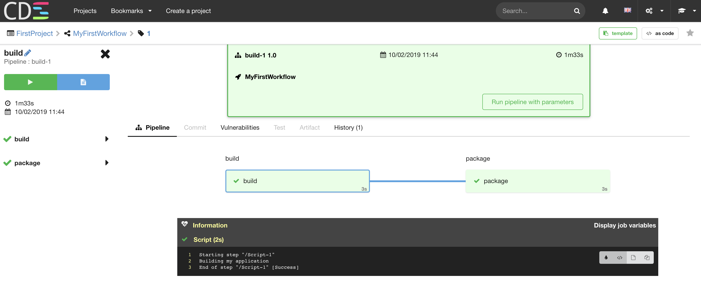

Docker Compose
Run with Docker-Compose
This tutorial allows you to start a CDS locally quickly.
- Do not use this docker-compose installation to run it in production without modification.
- For production purpose, please read CDS Services
The docker-compose.yml contains:
- cds-db service with a PostgreSQL
- cds-cache service with a Redis
- elasticsearch service with an Elasticsearch
- dockerhost allows cds-hatchery-swarm service to communicate with the local docker daemon
- cds-migrate service to prepare databases for API and CDN
- cds-api service
- cds-ui service
- cds-elasticsearch service
- cds-hatchery-swarm service
- cds-vcs service
- cds-repositories service
- cds-cdn service
Docker compose is very convenient to launch CDS for testing it. But this is not recommended for a Production Installation.
How to run
$ mkdir /tmp/cdstest && cd /tmp/cdstest
$ curl https://raw.githubusercontent.com/ovh/cds/0.50.0/docker-compose.yml -o docker-compose.yml
$ export HOSTNAME=$(hostname)
$ export CDS_DOCKER_IMAGE=ovhcom/cds-engine:0.50.0
# Get the latest version
$ docker pull ovhcom/cds-engine:0.50.0
# Create PostgreSQL database, redis and elasticsearch
$ docker-compose up -d cds-db cds-cache elasticsearch dockerhost
# check if database is up, the logs must contain "LOG: database system is ready to accept connections"
$ docker-compose logs| grep 'database system is ready to accept connections'
# you should have this line after few seconds: cds-db_1 | LOG: database system is ready to accept connections
$ docker-compose up cds-db-init
$ docker-compose up cds-migrate
# You should have this log: "cdstest_cds-migrate_1 exited with code 0"
# prepare initial configuration.
$ docker-compose up cds-prepare
# run API
$ docker-compose up -d cds-api
# the INIT_TOKEN variable will be used by cdsctl to create first admin user
$ TOKEN_CMD=$(docker logs $(docker-compose ps -q cds-prepare) | grep INIT_TOKEN) && $TOKEN_CMD
# if you have this error: "command too long: export INIT_TOKEN=....",
# you can manually execute the command "export INIT_TOKEN=...."
# download cdsctl
# on linux: $ curl 'http://localhost:8081/download/cdsctl/linux/amd64?variant=nokeychain' -o cdsctl
# on OSX: $ curl 'http://localhost:8081/download/cdsctl/darwin/amd64?variant=nokeychain' -o cdsctl
# create user
$ chmod +x cdsctl
$ ./cdsctl signup --api-url http://localhost:8081 --email admin@localhost.local --username admin --fullname admin
# enter a strong password
# verify the user
$ VERIFY_CMD=$(docker-compose logs cds-api | grep 'cdsctl signup verify' | cut -d '$' -f2 | xargs) && ./$VERIFY_CMD
# if you have this error: "such file or directory: ./cdsctl signup verify --api-url...",
# you can manually execute the command "./cdsctl signup verify --api-url..."
# run cdsctl
$ ./cdsctl user me
# should returns something like:
#./cdsctl user me
#created 2019-12-18 14:25:53.089718 +0000 UTC
#fullname admin
#id vvvvv-dddd-eeee-dddd-fffffffff
#ring ADMIN
#username admin
# run others services
$ docker-compose up -d cds-ui cds-cdn cds-hooks cds-elasticsearch cds-hatchery-swarm
# create first worker model
$ ./cdsctl worker model import https://raw.githubusercontent.com/ovh/cds/0.50.0/contrib/worker-models/go-official-1.17.yml
# import Import a workflow template
$ ./cdsctl template push https://raw.githubusercontent.com/ovh/cds/0.50.0/contrib/workflow-templates/demo-workflow-hello-world/demo-workflow-hello-world.yml
Workflow template shared.infra/demo-workflow-hello-world has been created
Template successfully pushed !
# create project, then create a workflow from template
$ ./cdsctl project create DEMO FirstProject
$ ./cdsctl template apply DEMO MyFirstWorkflow shared.infra/demo-workflow-hello-world --force --import-push --quiet
# run CDS Workflow!
$ ./cdsctl workflow run DEMO MyFirstWorkflow
Workflow MyFirstWorkflow #1 has been launched
http://localhost:8080/project/DEMO/workflow/MyFirstWorkflow/run/1
Important: the service is exposed without https.
- Do not use this docker-compose installation to run it in production without modification.
- Safari don’t manage secured cookie on localhost, please use another browser to avoid authentication error on your browser
- Login on WebUI
Open a browser on http://localhost:8080/account/signup, then login with the user admin,
- Check on UI
on http://localhost:8080/project/DEMO/workflow/MyFirstWorkflow/run/1 you will have

You see that the pipeline deploy in production was not launched automatically.
There is a Run Condition on it cds.manual = true:

The build pipeline contains two stages, with only one job in each stage

If the job does not start
The worker model used in this tutorial is a docker image golang. CDS will run jobs only if the worker model is registered.
So, if the first job of the workflow stay in Waiting status, you can check if you worker model is well registered.
Go on http://localhost:8080/settings/worker-model/shared.infra/go-official-1.17 , you must have the flag need registration: false.
If the flag is true, you can check the swarm hatchery logs:
$ docker-compose logs -f cds-hatchery-swarm
When a worker (so, a container) is starting, this container communicates with the api with the url http://$HOSTNAME:8081 to download the worker binary.
This URL is using your $HOSTNAME, but perhaps that this can’t be used on your docker installation from a container. If the container can’t communicate to the api with this url, you can update it:
# you can replace $HOSTNAME by your IP on local network. Example: 192.168.xxx.xxx
$ export CDS_EDIT_CONFIG="hatchery.swarm.commonConfiguration.provision.workerApiHttp.url=http://192.168.xxx.xxx:8081 "
$ docker-compose up cds-edit-config
$ docker-compose restart cds-hatchery-swarm
Setup connection with a VCS
# READ THE section https://ovh.github.io/cds/docs/integrations/github/github_repository_manager/#create-a-cds-application-on-github to generate the clientId and clientSecret.
# Short version:
# go on https://github.com/settings/applications/new
# Application name: cds-test-docker-compose
# Homepage URL: http://localhost:8080
# Authorization callback: http://localhost:8080/cdsapi/repositories_manager/oauth2/callback
# send click on register application.
$ export CDS_EDIT_CONFIG="vcs.servers.github.github.clientId=xxxxx vcs.servers.github.github.clientSecret=xxxxx "
$ docker-compose up cds-edit-config
$ docker-compose up -d cds-vcs cds-repositories
Notice that here, you have the VCS and Repositories services up and running.
vcs: The aim of this µService is to communicate with Repository Manager as GitHub, GitLab, Bitbucket… But, as your CDS is not probably public, GitHub won’t be able to call your CDS to automatically run your workflow on each git push.
repositories: this µService is used to enable the as-code feature. Users can store CDS Files on their repositories. This service clones user repositories on local filesystem.
Then, next with Actions, Plugins
- Import actions, example:
$ ./cdsctl action import https://raw.githubusercontent.com/ovh/cds/0.50.0/contrib/actions/cds-docker-package.yml
Go further
- How to use OpenStack infrastructure to spawn CDS Workers read more
- Link CDS to a repository manager, as GitHub, Bitbucket Server or GitLab
- Learn more about CDS variables read more